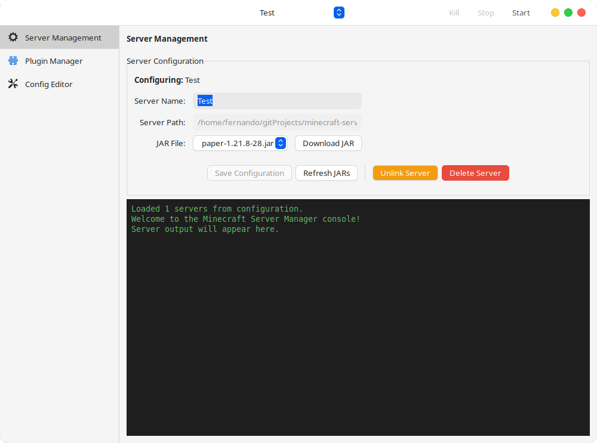
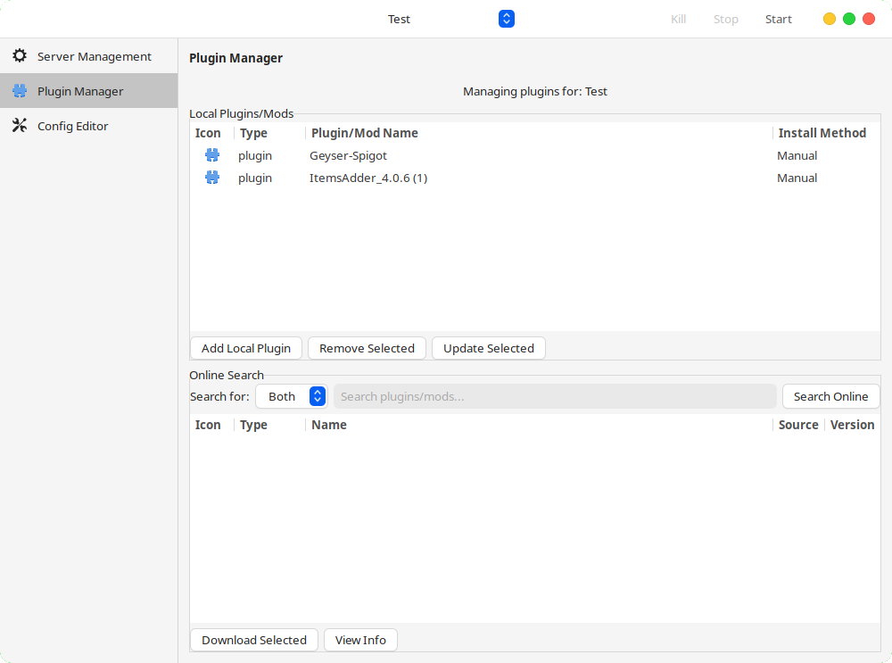
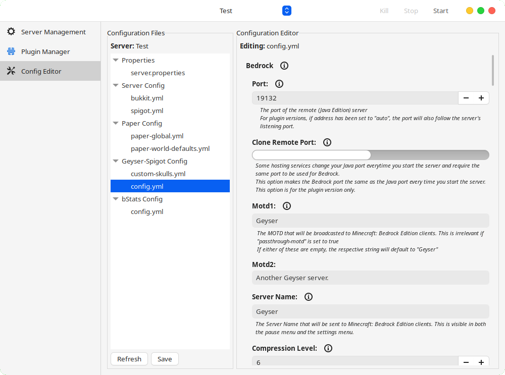

A comprehensive GTK-based application for managing Minecraft servers with plugin and mod support. Create, configure, and monitor your servers with ease.
Everything you need to manage your Minecraft servers efficiently and effectively
Create, start, stop, and configure Minecraft servers with an intuitive interface. Support for Paper, Spigot, Bukkit, and other server types.
Browse, download, and manage plugins from Modrinth, Spigot, and CurseForge. Smart search with type detection and visual icons.
Real-time server output with syntax highlighting and auto-scrolling. Dark theme for better readability during long monitoring sessions.
Visual editor for YAML/YML server configuration files. Easy-to-use interface for modifying server settings without manual file editing.
Choose from installed Java versions and access download pages if needed. Ensures compatibility with different Minecraft server versions.
Download server JARs and plugins with ease. Metadata tracking for installation methods and sources.
Get a glimpse of the intuitive interface and powerful features

Comprehensive server administration interface

Browse and install plugins from multiple sources

Visual editor for server configuration files
Choose your preferred installation method and start managing your Minecraft servers today
Recommended installation method with automatic updates
Install from Flathubflatpak install flathub io.github.fernandomema.MinecraftServerManager
Portable executable that runs on most Linux distributions
Download AppImageGet support, report issues, or contribute to the project